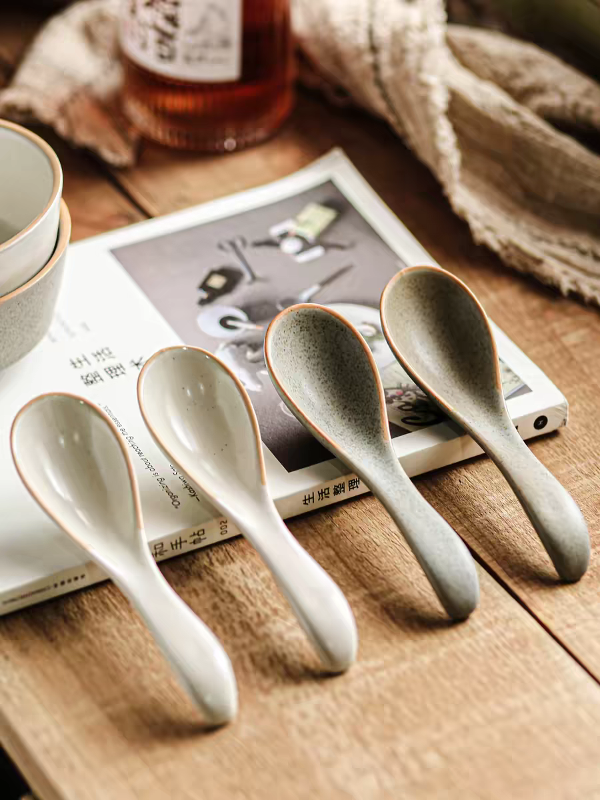
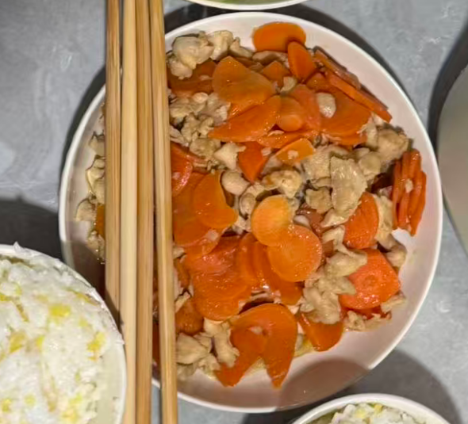
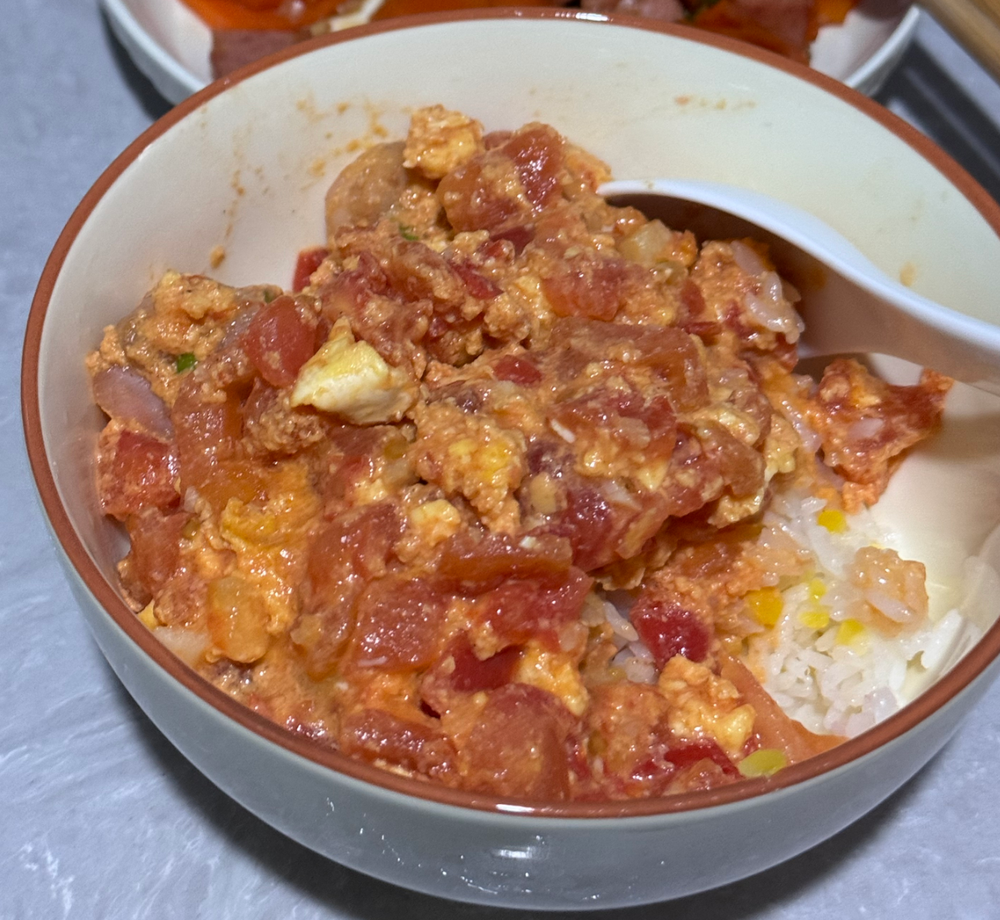
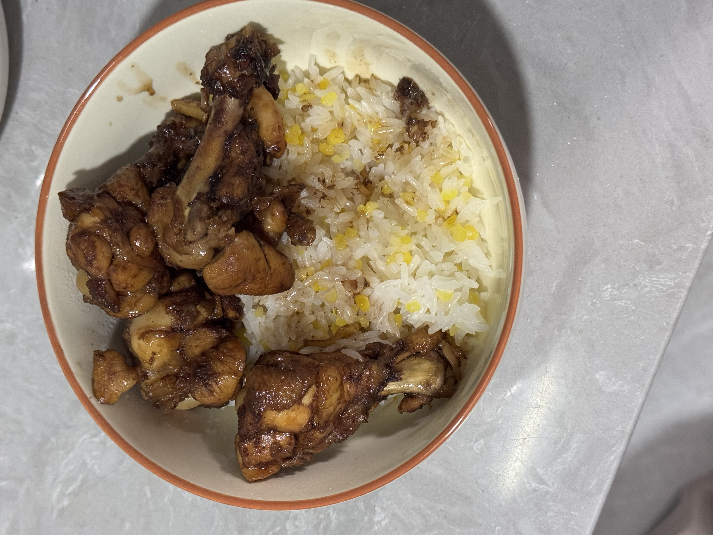

家常菜
胡萝卜炒火腿

食材：
- 胡萝卜 2根
- 火腿肠 1根
- 蒜子 3瓣
- 小米椒 2小根
- 酱油
- 蚝油
- 淀粉
- 白糖
步骤：
- 1. 胡萝卜切丁焯水焯软捞出。
- 2. 少油，放蒜炒香，放香肠稍微煎一下，再放胡萝卜炒软，放小米椒翻炒。
- 3. 调个料汁：放半勺酱油、少许耗油、白糖、淀粉、半碗清水搅匀。
- 4. 倒入料汁后翻炒收汁就好。
番茄虾仁滑蛋

备菜：
- 番茄
- 鸡蛋
- 虾仁
- 葱
- 生抽 1勺
- 蚝油 0.3勺
- 淀粉 适量
- 黑胡椒 适量
- 番茄酱
做法：
- 1. 番茄一半切至小粒，一半切块。
- 2. 黑胡椒粉腌制虾仁十分钟。
- 3. 鸡蛋打散。
- 4. 碗中加1勺生抽、0.3勺蚝油、适量淀粉、一点黑胡椒、半碗清水。
- 5. 热锅冷油，放入虾仁。
- 6. 煎至两面金黄，捞出备用。
- 7. 热油下蒜末爆香、加番茄、番茄酱，翻炒出沙。
- 8. 加入蛋液、虾仁，盖锅焖2min。
- 9. 倒入碗汁，煮开，出锅，撒葱花。
可乐鸡翅

食材：
- 鸡翅根/鸡翅中/小鸡腿 适量
- 可乐 1罐
- 姜片 适量
- 料酒 适量
- 生抽 适量
- 盐 适量
- 蚝油 适量
- 老抽 少量
- 油 适量
步骤：
- 1. 鸡翅根/鸡翅中/小鸡腿洗好、改花刀。
- 2. 冷水下锅，加姜片、料酒，出血沫捞出、焯至干净，后捞出，用纸吸干鸡翅水分。
- 3. 热锅冷油，放入鸡翅，调至中小火，煎至双面焦黄。
- 4. 放姜丝，加入适量生抽、盐、蚝油、少量老抽翻炒出香味。
- 5. 加入可乐至没过鸡翅，大火煮开。
- 6. 盖盖小火煮10min。
- 7. 开大火收汁、出锅。
红烧肉
食材：
- 五花肉 500g
- 生姜 1块
- 葱 2根
- 八角 2个
- 桂皮 1块
- 老抽 2勺
- 生抽 2勺
- 料酒 1勺
- 冰糖 适量
- 盐 适量
步骤：
- 1. 五花肉切块，焯水去血水。
- 2. 锅中加油，放入冰糖炒出糖色。
- 3. 放入五花肉翻炒上色。
- 4. 加入生姜、葱、八角、桂皮、老抽、生抽、料酒。
- 5. 加入适量清水，大火烧开后转小火炖1小时。
- 6. 最后大火收汁，加盐调味即可。
清蒸鱼
食材：
- 鱼 1条（约500g）
- 生姜 1块
- 葱 2根
- 料酒 1勺
- 蒸鱼豉油 2勺
- 油 适量
步骤：
- 1. 鱼处理干净，在鱼身上划几刀。
- 2. 鱼身上撒盐，抹匀，加入料酒腌制10分钟。
- 3. 盘中放入生姜片和葱段，将鱼放在上面。
- 4. 蒸锅水开后，放入鱼蒸8-10分钟。
- 5. 取出鱼，撒上葱花，淋上蒸鱼豉油。
- 6. 锅中热油，浇在鱼身上即可。
麻婆豆腐
食材：
- 豆腐 1块
- 牛肉末 100g
- 豆瓣酱 1勺
- 花椒粉 适量
- 蒜末 适量
- 姜末 适量
- 葱花 适量
- 生抽 1勺
- 糖 适量
- 油 适量
步骤：
- 1. 豆腐切块，焯水备用。
- 2. 锅中加油，爆香蒜末和姜末。
- 3. 加入牛肉末炒至变色。
- 4. 加入豆瓣酱炒出红油。
- 5. 加入适量清水，放入豆腐块。
- 6. 加入生抽和糖调味。
- 7. 煮3-5分钟后，撒上花椒粉和葱花即可。
快手菜
番茄炒蛋
食材：
- 番茄 2个
- 鸡蛋 2个
- 盐 适量
- 糖 适量
- 油 适量
步骤：
- 1. 番茄切块，鸡蛋打散。
- 2. 锅中加油，倒入蛋液炒熟盛出。
- 3. 锅中再加油，放入番茄块炒软。
- 4. 加入炒好的鸡蛋，加盐和糖调味。
- 5. 翻炒均匀后盛出即可。
酸辣土豆丝
食材：
- 土豆 1个
- 干辣椒 3个
- 蒜 2瓣
- 醋 2勺
- 盐 适量
- 油 适量
步骤：
- 1. 土豆切丝，泡水去除淀粉。
- 2. 锅中加油，爆香干辣椒和蒜。
- 3. 放入土豆丝翻炒。
- 4. 加入醋和盐调味。
- 5. 翻炒均匀后盛出即可。
下饭菜
待探索...
早餐
全麦三明治
食材：
- 全麦面包 2片
- 鸡蛋 1个
- 生菜 2片
- 番茄 2片
- 火腿 2片
- 沙拉酱 适量
步骤：
- 1. 煎鸡蛋至熟透。
- 2. 在一片全麦面包上涂抹沙拉酱。
- 3. 依次铺上生菜、番茄、火腿和煎好的鸡蛋。
- 4. 盖上另一片全麦面包，轻轻按压。
- 5. 对角切开即可食用。
燕麦粥
食材：
- 燕麦片 50g
- 牛奶 200ml
- 香蕉 1根
- 蓝莓 适量
- 蜂蜜 适量
步骤：
- 1. 将燕麦片放入锅中，加入牛奶。
- 2. 小火煮至燕麦片变软，大约5分钟。
- 3. 香蕉切片，与蓝莓一起加入燕麦粥中。
- 4. 加入适量蜂蜜调味即可。
鸡蛋饼
食材：
- 鸡蛋 2个
- 面粉 50g
- 葱花 适量
- 盐 适量
- 油 适量
步骤：
- 1. 将鸡蛋打散，加入面粉、葱花和盐，搅拌成面糊。
- 2. 平底锅加热，刷一层油。
- 3. 倒入面糊，摊成圆形。
- 4. 小火煎至两面金黄即可。
肉
待探索...
鱼
待探索...
蔬菜
待探索...
鸡蛋
待探索...
汤羹
待探索...
烘焙
待探索...
主食
待探索...
面
待探索...